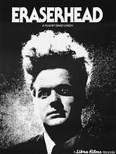
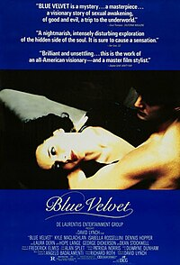
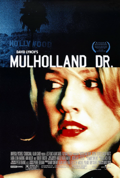

Eraserhead (1977)
Eraserhead é um filme estadunidense de 1977, dirigido e escrito por David Lynch. Gravado em preto e branco, o terror surrealista foi o primeiro longa-metragem de Lynch, o qual foi produzido com o apoio da American Film Institute (AFI) no período em que o diretor estudava na instituição. Estrelado por Jack Nance, Charlotte Stewart, Jeanne Bates, Judith Anna Roberts, Laurel Near e Jack Fisk, conta a história de Henry Spencer, o qual é responsável por cuidar de seu filho deformado em meio a uma sequência de sonhos e alucinações.
A princípio, não despertou muito interesse no público, porém Eraserhead conquistou popularidade depois de ser exibido em diversas sessões de cinema como filme da meia-noite. Desde seu lançamento, a obra de Lynch recebeu inúmeras críticas positivas. O imaginário surrealista e as correntes sexuais são vistas como elementos temáticos principais, e o projeto sonoro obscuro como o destaque técnico. Em 2004, o filme foi preservado pela National Film Registry na Biblioteca do Congresso dos Estados Unidos como "cultural, histórico ou esteticamente significativo".
Veludo Azul "Blue Velvet" (1986)
Veludo Azul (em inglês: Blue Velvet) é um filme de suspense e mistério neo-noir de 1986, dirigido e escrito por David Lynch. Estrelado por Kyle MacLachlan, Isabella Rossellini, Dennis Hopper e Laura Dern, leva o nome da canção de 1951 com o mesmo nome, interpretada por Bobby Vinton. A obra segue um jovem estudante universitário que, voltando para casa para visitar seu pai doente, descobre uma orelha humana decepada em um campo, que, por sua vez, o leva a descobrir uma vasta conspiração criminosa e a iniciar um relacionamento romântico com uma problemática cantora de boate.
Blue Velvet inicialmente recebeu uma resposta crítica dividida, com muitos afirmando que seu conteúdo explícito servia a poucos propósitos artísticos. Mesmo assim, o filme rendeu a Lynch sua segunda indicação ao Oscar de melhor diretor e recebeu os prêmios de melhor filme e melhor diretor do ano da Sociedade Nacional de Críticos de Cinema. Nos anos seguintes, o filme foi reavaliado e amplamente considerado como uma das principais obras de Lynche um dos maiores filmes da década de 1980. Publicações incluindo Sight & Sound, Time, Entertainment Weekly e BBC Magazine classificaram-no entre os maiores filmesamericanos de todos os tempos. Em 2008, foi escolhido pelo American Film Institute como um dos dez maiores filmes de mistério dos Estados Unidos.
Cidade dos Sonhos "Mulholland Drive" (2001)
Cidade dos Sonhos (em inglês: Mulholland Drive) é um filme franco-estadunidense de 2001, dos gêneros drama e suspense, escrito e dirigido por David Lynch. Estrelado por Naomi Watts e Laura Harring, o filme conta a história de Betty (Naomi Watts), uma aspirante a atriz que se muda para Los Angeles e encontra Rita (Laura Harring), uma misteriosa mulher que acabara de perder a memória num acidente de carro.
Originalmente planejado para ser uma série de TV, grande parte da gravação foi feita em 1999. Entretanto, Lynch precisou fazer alterações de forma a transformá-lo num filme, uma vez que o projeto de série foi recusado. Ele evita explicar suas intenções para a narrativa, resumindo o filme apenas como "uma história de amor na cidade dos sonhos".Categorizado como suspense psicológico, o filme deu a Lynch o Prix de la mise en scène (Prêmio de direção) no Festival de Cannes de 2001, além de uma indicação ao Oscar de Melhor Direção, Mulholland Drive ocupa a 8ª posição na ultima edição do ranking de 250 filmes "The Greatest Films of All Time" da tradicional revista Sight & Sound. É considerado o melhor filme do século também segundo a lista dos 100 melhores, da BBC.
